Storytelling e quadros-chave para aprovação · vídeo-vitrine GLSL do Estúdio · 28 s · 1920×1080 · quadros reais renderizados pelo motor
A história em 4 atos. 1. Provocação (0 a 5 s): um objeto 3D perfeito na tela e a voz nega o óbvio: não foi filmado, não foi modelado. 2. Revelação (5 a 15 s): uma varredura mostra que o objeto é só uma fórmula; depois o código mostra o que calcula, uma coisa por palavra (luz, sombra, reflexo) e o próprio pixel. 3. Expansão (15 a 22 s): a mesma matemática afunda no chão e vira tinta, o papel engole a cena (transição) e as luzes se apagam para o acabamento de cinema, mostrado lado a lado, sem e com. 4. Assinatura (22 a 28 s): as luzes voltam, o objeto se recolhe e o motor "fala" GLSL, uma letra por vez, no instante em que a voz soletra.
Fio condutor: o mesmo objeto do começo ao fim, o timecode e o número do quadro no topo (lembrando que cada quadro é calculado) e um azul só.
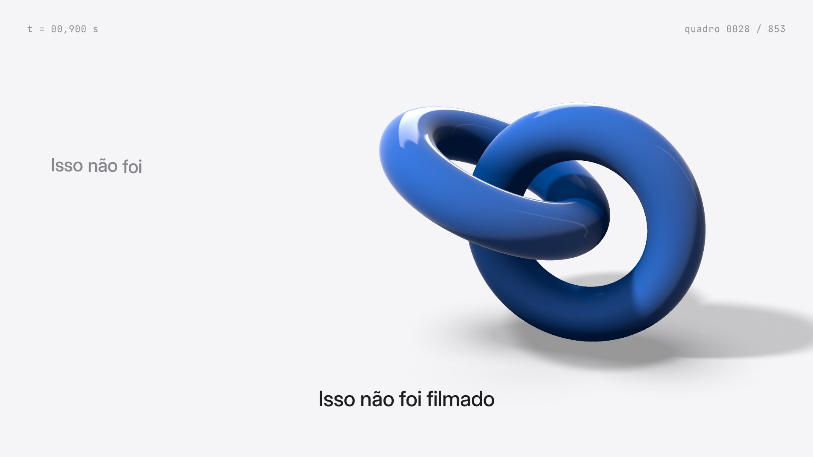
1 · Abertura
Quadro 1 já é imagem pronta. Anéis girando devagar, luz de estúdio, sombra suave calculada.
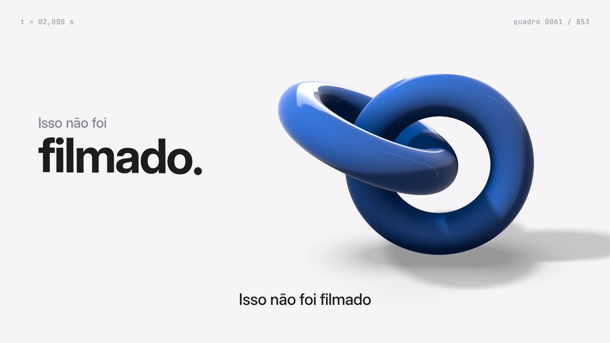
2 · A negação
"filmado." sobe da máscara e um traço azul o risca no fim da palavra.
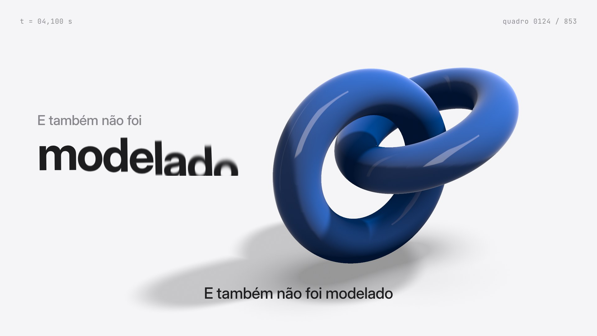
3 · Meia volta
A câmera dá meia volta rápida no objeto (com motion blur no vídeo) e "modelado." é riscado.
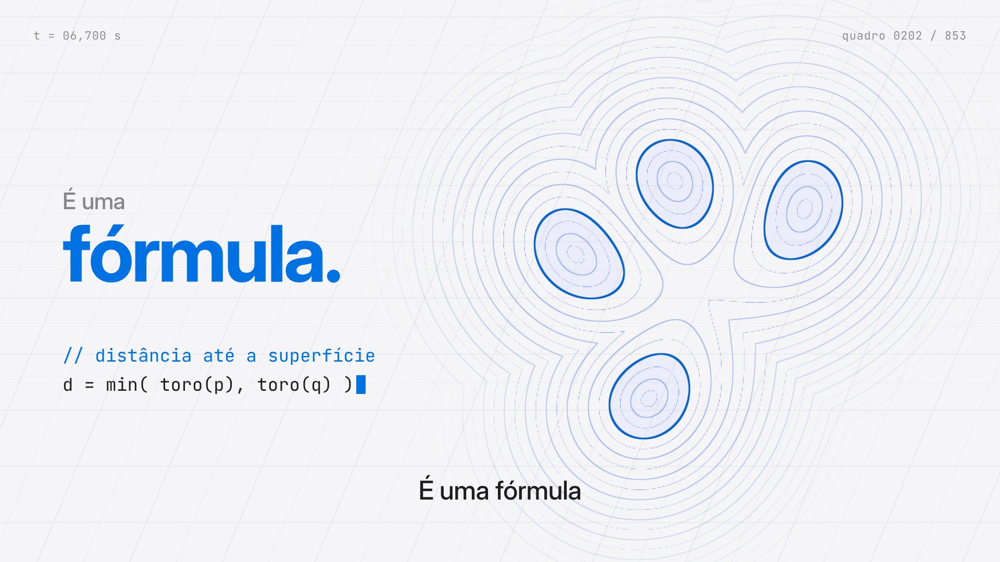
4 · Vitrine 1: raio X
A varredura transforma o objeto nas curvas de nível da fórmula dele. A fórmula é digitada ao lado.
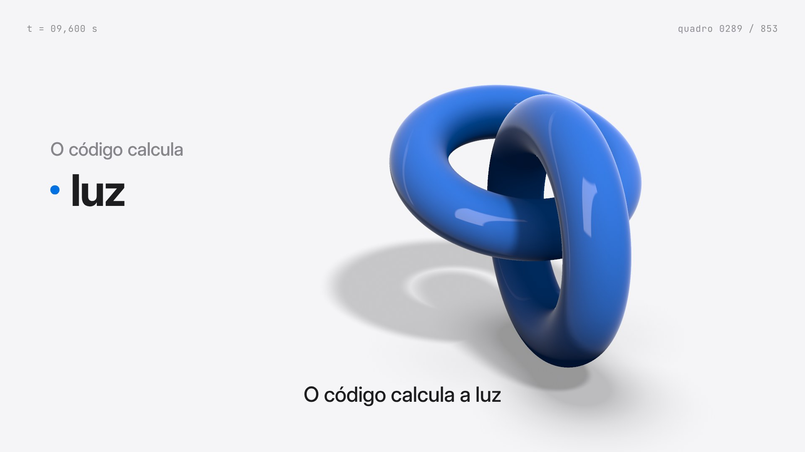
5 · A luz gira
Em "luz" a luz principal gira e o sombreado acompanha. Lista cresce à esquerda, palavra ativa em preto.
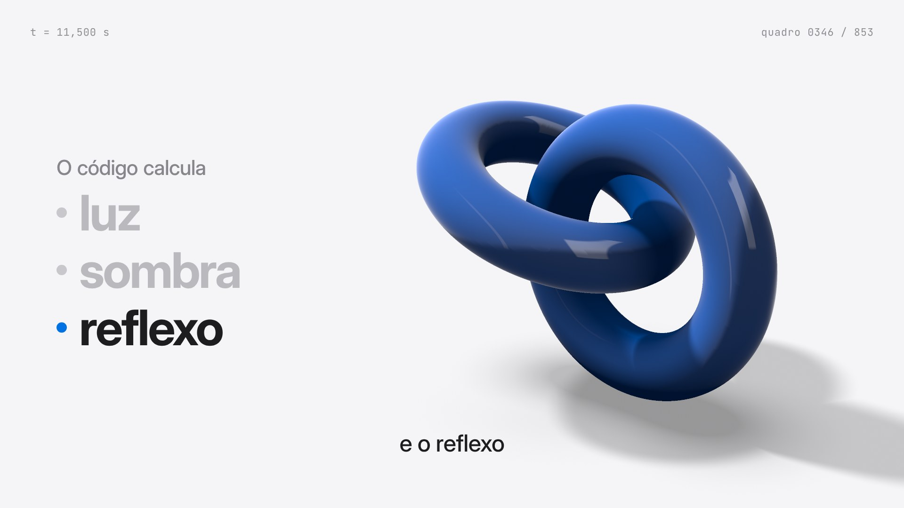
6 · Sombra e reflexo
Em "sombra" a sombra varre o chão; em "reflexo" o brilho do softbox desliza pela superfície.
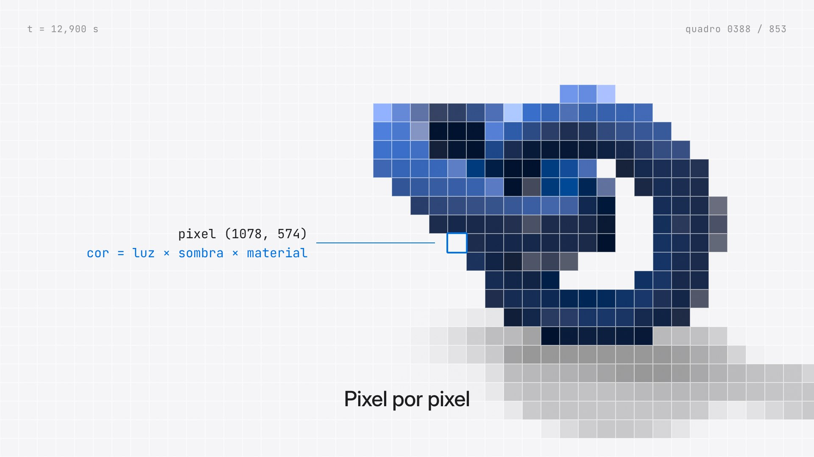
7 · Vitrine 2: o pixel
A imagem vira blocos; um bloco real é marcado com sua posição e a conta que o pinta. No 2º "pixel" volta nítida num estalo.
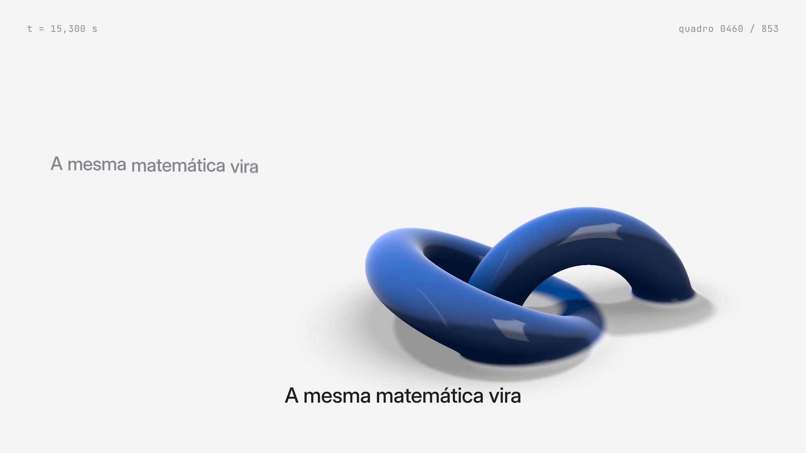
8 · O objeto afunda
O objeto afunda no chão como num líquido, com menisco calculado.
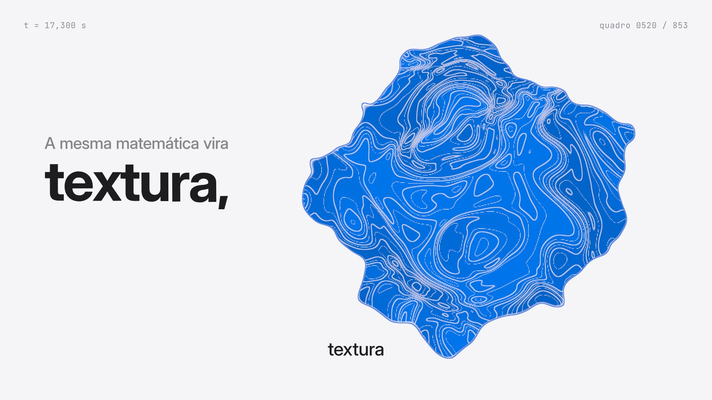
9 · Vira tinta
Do ponto onde afundou, a tinta azul se espalha com veios finos do mesmo ruído. Câmera vista de cima.
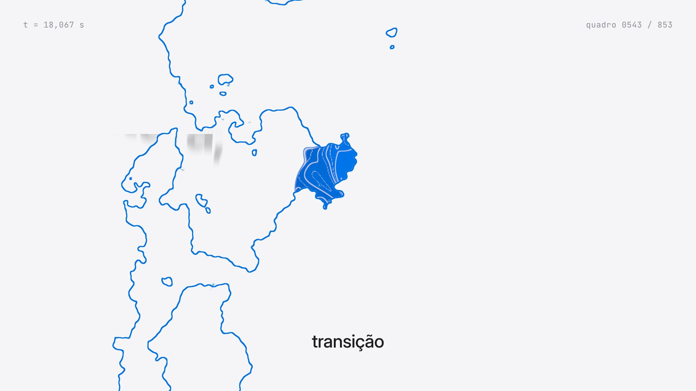
10 · O papel engole
Dissolução por ruído da direita para a esquerda, com um fio azul na frente da borda.
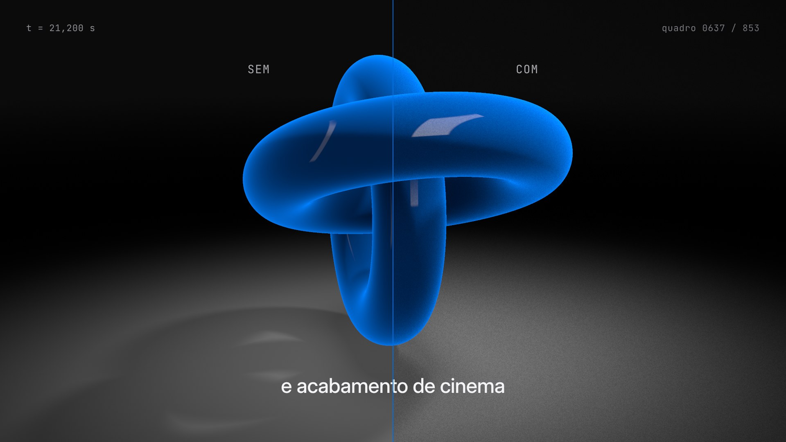
11 · Vitrine 3: sem e com
Palco escuro, luz de recorte. Tela dividida: à esquerda cru, à direita com grão de filme e vinheta.
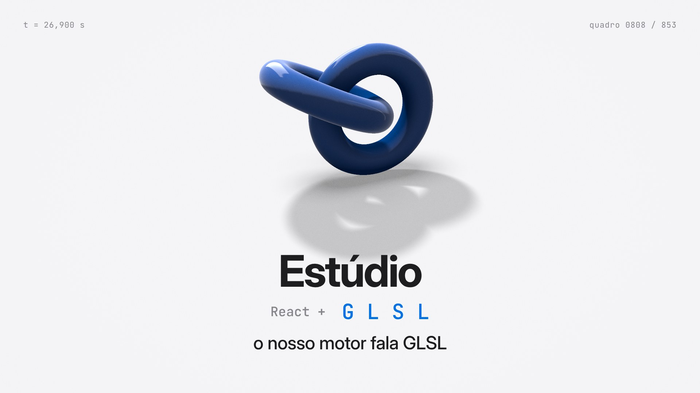
12 · Assinatura
As luzes voltam. "Estúdio" e as letras G, L, S, L batem cada uma quando a voz diz a letra.
Som (no render final): cama musical discreta que abaixa sob a voz e sobe nos respiros; efeitos curtos no quadro exato de cada ação (tique no risco, whoosh no giro, varredura, estalo no pixel, swish na transição). Master −14 LUFS. A legenda contínua segue o padrão do projeto.